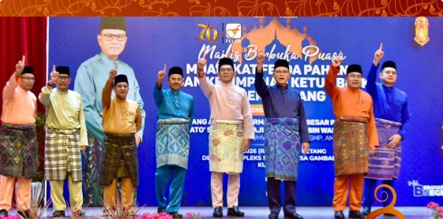
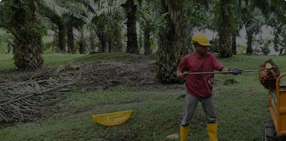
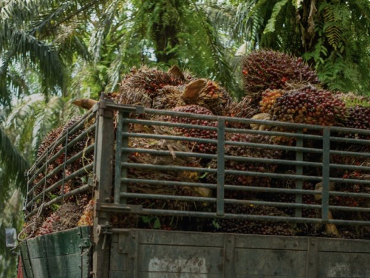
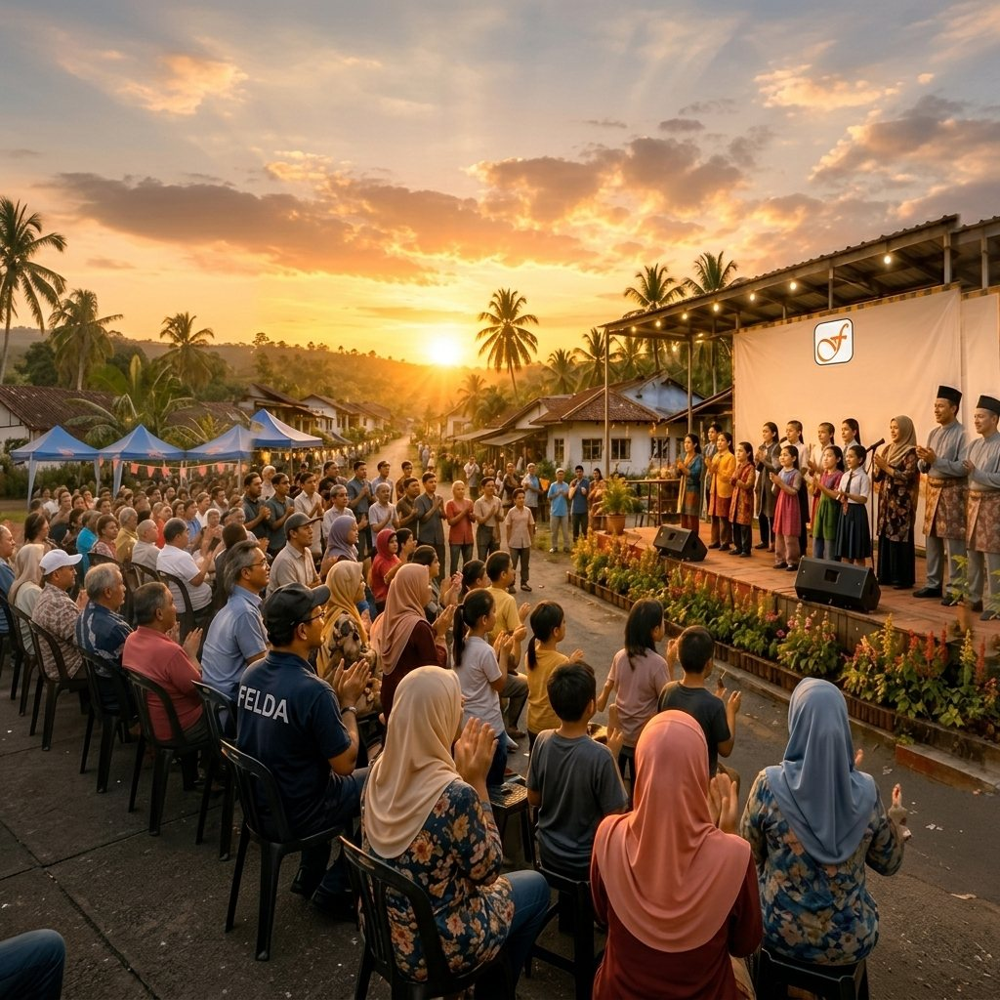
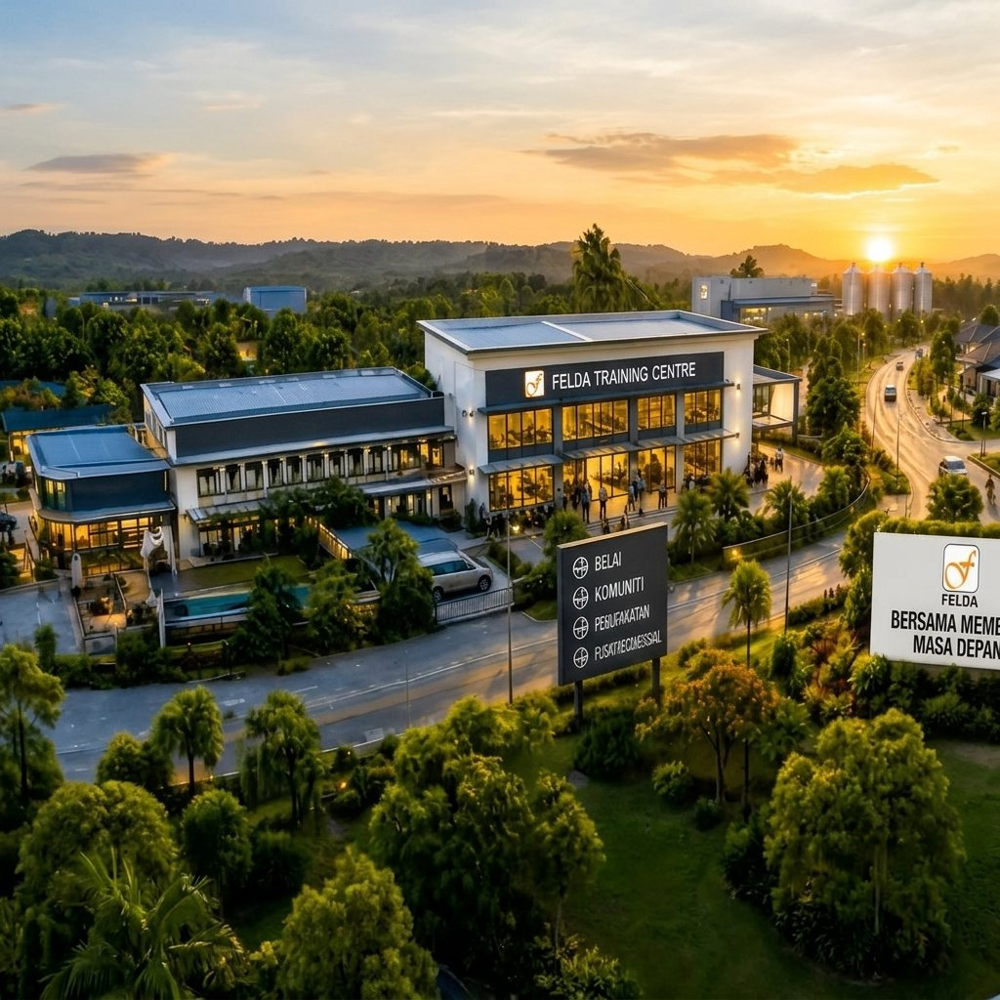
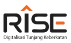

19Jul
Dari hutan belantara kepada komuniti yang maju — tujuh dekad FELDA membina tanah, membina insan dan membina masa depan generasi peneroka.
Semak penyata pendapatan, potongan dan baki akaun anda.
SemakBantuan pendidikan, khairat kematian dan tabung kebajikan.
KetahuiCari rancangan dan pejabat wilayah FELDA berhampiran anda.
CariKomuniti, pendidikan, usahawan dan pewarisan.
Mohon

Halakan kursor atau ketik pada setiap kad untuk melihat program utama yang memperkasa peneroka dan komuniti FELDA.

01
04
05
Platform digital bersepadu untuk memacu transformasi pengurusan ladang dan komuniti peneroka.
Klik di siniProses perjanjian lebih telus dan teratur. Akses dokumen anda bila-bila masa, di mana sahaja.
Klik di siniIsnin – Jumaat, 8:30 pagi – 5:30 petang · 03-2191 2191